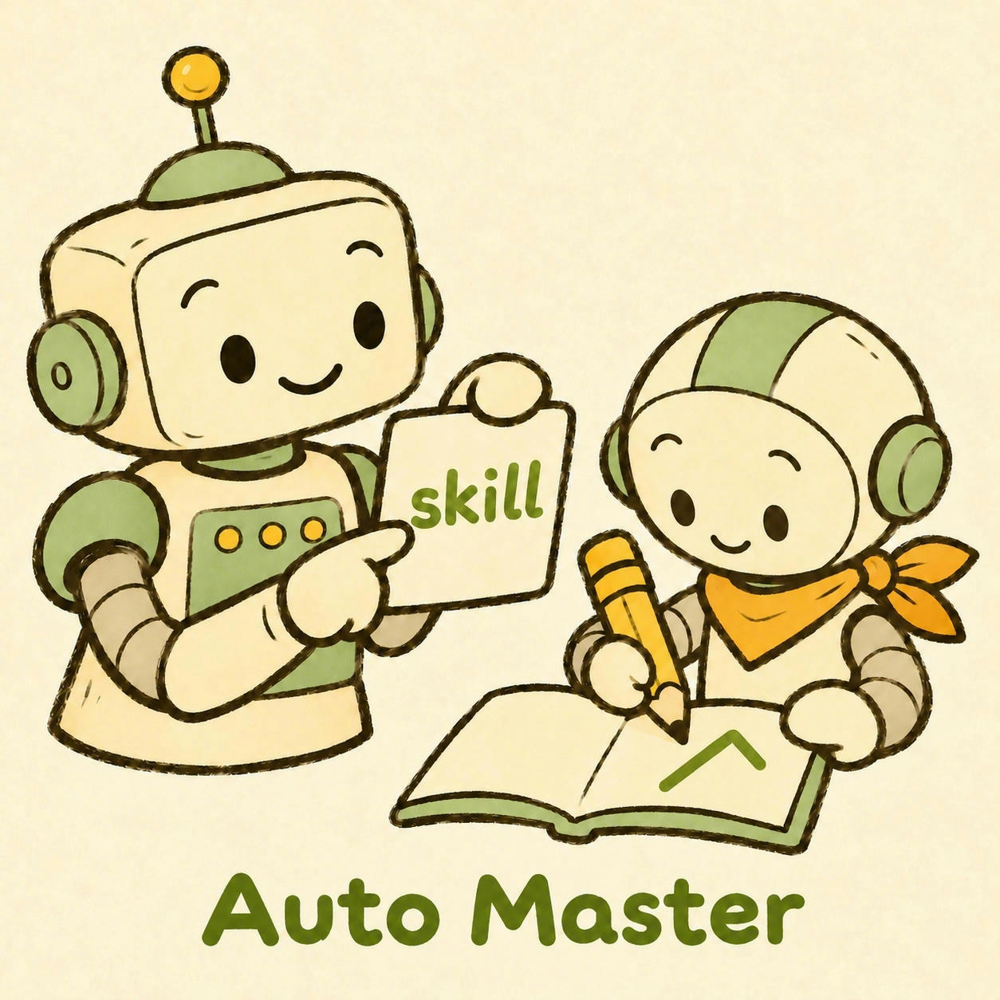

Inner loop
Shape the demonstrations
The agent identifies recurring behaviors, designs skills for relevant tasks, and pilots them with the teacher. It uses the rollout evidence to refine the skills and select training examples.
Autonomous Post-Training by Making the Same Model a Better Teacher

A teacher can solve a task and still teach a bad habit. AutoMaster studies trajectories, writes natural-language skills to guide the same teacher, and selects demonstrations for supervised fine-tuning. The student is evaluated without those skills.
Project video · 1 min 35 sec
See how an agent turns feedback about teacher behavior into skills and training data.
Open video fileMethod
Two feedback loops connect what the teacher demonstrates with what the student learns.

Inner loop
The agent identifies recurring behaviors, designs skills for relevant tasks, and pilots them with the teacher. It uses the rollout evidence to refine the skills and select training examples.
Outer loop
The student fine-tunes on the selected trajectories. Evaluation without skill prompts reveals which behaviors transfer and which need another round of intervention.
Skills
Explore nine skills from AutoMaster research runs. Open an illustration to read the teacher’s instructions and visit the original skill file.
When a solver must satisfy an error bound, compare its output with an independent reference. Keep the failing input and the original tolerance while diagnosing the error.
“Define the reference and bound before running this block.”
When a task delivers a file, model, or service, use the same entry point its user will use. Measure the requested property on that final output.
“Exercise the finished deliverable.”
When faster code must match a reference exactly, first speed up the work around sensitive operations. Check tied rankings and floating-point reductions against the reference.
“Measure this conservative implementation against the required performance target.”
When repeated queries lead to the same weak candidate, find the guessed detail they share. Drop it and search a clue that could independently identify the target.
“Drop that guessed restriction from the next discovery query.”
When distance could rule a candidate in or out, check the endpoints, units, and travel mode. A nearby station may explain a clue while leaving the requested walking distance unknown.
“Before using a returned number, identify its two endpoints, what was measured, and its units.”
When English summaries omit a local fact, keep one verified name or institution and search for the missing relationship in the language of the relevant record.
“Preserve names, dates, and roles.”
When framework objects cooperate, try the smallest real construction and activation sequence. Identify which object starts the work, handles it, and cleans up.
“Determine which object owns startup, processing and cleanup.”
When a library wraps an external service, call its real public entry point. Record the outbound request at the dependency boundary and check the value returned to the caller.
“Use a fresh ledger for the call.”
When a parser delegates a nested region, specify which reader consumes the closing marker. Test a nested item followed by a sibling so a misplaced cursor becomes visible.
“Define whether the closing marker belongs to the child and keep that convention at every call site.”
Browse all skill files on GitHub
execute-numeric-decision

Both solvers met the error threshold. The unguided teacher claimed fourth-order accuracy despite observing second-order convergence. The guided teacher switched to a nine-point stencil and verified fourth-order convergence on progressively finer grids.
Read Figure 5arecover-search-anchor

Both searches found the same episode. The unguided teacher repeatedly guessed an award. The guided teacher used the episode credits to identify director Meera Menon, then checked the award clue.
Read Figure 5bTrace failures to their source

A flawed self-test led the unguided teacher to reverse a global sort. The guided teacher traced the failure to the test input, checked the UTF-16 ordering, and kept the required ascending sort. The corrected implementation passed 38 of 38 tests.
Read Figure 5cResults
AutoMaster improves mean performance by 1.42–8.99 percentage points over Vanilla SFT across six benchmark–model settings.
| Benchmark | Qwen3.5 | Base | Vanilla SFT | AutoMaster | Gain |
|---|---|---|---|---|---|
| Terminal-Bench 2.1 | 4B | 15.73 ± 2.25 | 22.47 ± 1.12 | 28.09 ± 2.25 | +5.62 |
| Terminal-Bench 2.1 | 9B | 25.47 ± 2.59 | 26.59 ± 1.30 | 35.58 ± 1.30 | +8.99 |
| BrowseComp | 4B | 33.69 ± 0.82 | 43.24 ± 0.54 | 46.13 ± 2.98 | +2.88 |
| BrowseComp | 9B | 35.50 ± 2.72 | 46.85 ± 2.98 | 51.53 ± 1.25 | +4.68 |
| Doc2Repo | 4B | 21.39 ± 2.61 | 32.30 ± 4.00 | 33.72 ± 3.58 | +1.42 |
| Doc2Repo | 9B | 33.42 ± 1.60 | 36.05 ± 3.89 | 40.79 ± 3.21 | +4.74 |
Terminal-Bench 2.1 and BrowseComp (Lite-185) report task accuracy. Doc2Repo reports mean test pass rate. Both fine-tuning methods use the same teacher, task pool, 512 training trajectories, and SFT recipe.
Citation
@misc{chen2026automasterautonomousposttrainingmaking,
title = {AutoMaster: Autonomous Post-Training by Making the Same Model a Better Teacher},
author = {Guoxin Chen and Shuang Sun and Fanzhe Meng and Xinyu Tang and Ruihua Song and Wayne Xin Zhao},
year = {2026},
eprint = {2611.26510},
archivePrefix = {arXiv},
primaryClass = {cs.CL},
url = {https://arxiv.org/abs/2611.26510}
}